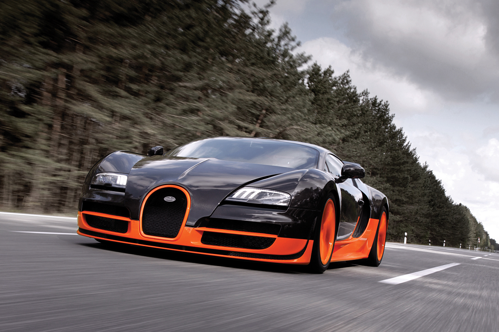
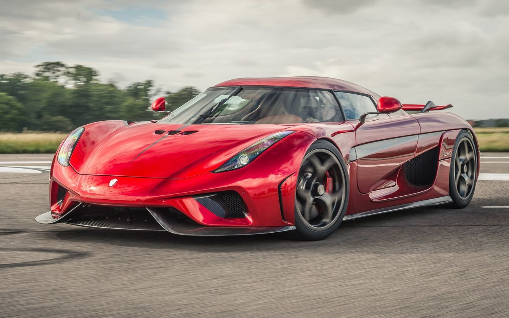
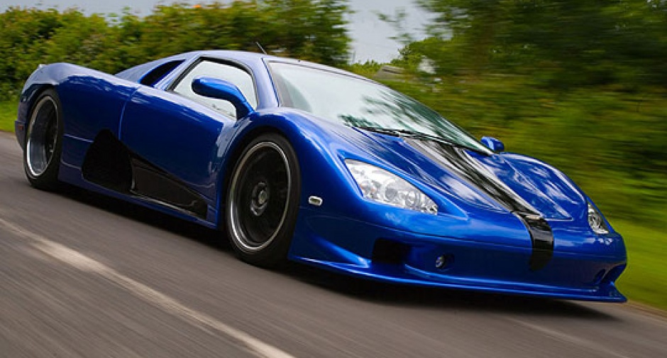
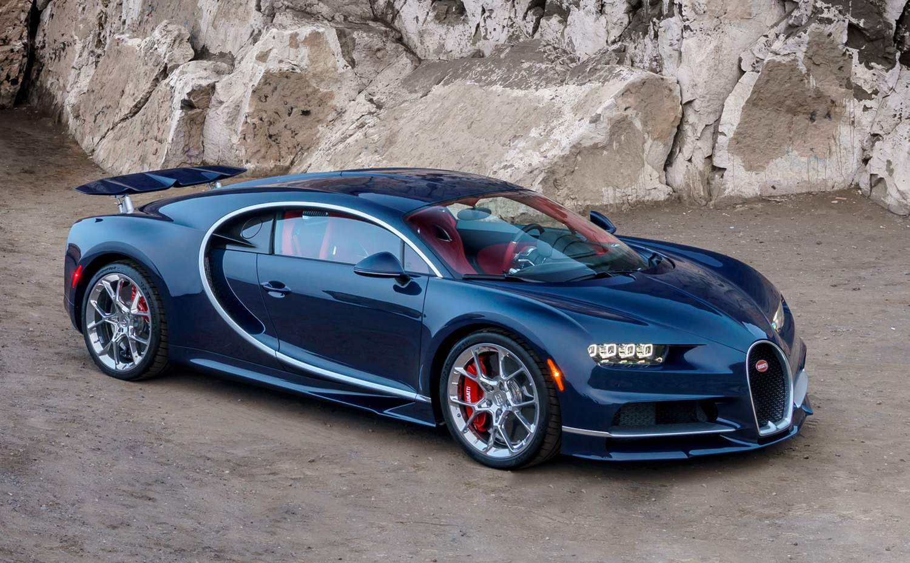

foi produzido de 2011 a 2015 e atingiu a marca de 408,84 Km/h e é o segundo conversível mais
rápido do mundo. Esse
carro chegou de 0 a 100 km/h em 2,6 segundos. Motor e cilindros: W16; Velocidade Máxima: 408,84
Km/h; 0 a 100 km/h: 2,6
segundos; Cavalos de potência: 1200; Máx. torque: 1 500 Nm a 3 000-5 000 rpm.
9 - Porsche_9ff_GT9–R
Começou a ser produzido em 2007 e a velocidade máxima que esse carro alcançou foi de 409 Km/h.
O GT9- alcança a
velocidade de 0 a 100 km/h em 2,9 segundos. Motor e cilindros: B6; Velocidade Máxima: 409 Km/h;
0 a 100 km/h: 2,9
segundos; Cavalos de potência: 1120; Máx. torque: 1050 Nm a 6170 rpm.
8 - Koenigsegg Regera

Ele é um carro que começou a ser produzido em 2016 e a velocidade máxima que esse automóvel
pode chegar é de 410 km/h.
O Regera chega de 0 a 100 km/h em 2,7 segundos. Motor e cilindros: V8; Velocidade Máxima: 410
Km/h; 0 a 100 km/h: 2,7
segundos; Cavalos de potência: 1822; Máx. torque: 2000 Nm combinado a 4100 rpm pelo motor de
combustão.
7 - SSC Ultimate Aero Twin Turbo

É um carro de produção inicial de 2006 e já foi o carro mais rápido do mundo pelo Livro dos
Recordes de 2007 a 2010
atingindo a marca de 412 km/h, quando perdeu o posto para o Bugatti Veyron. A SSC atualizou
essa versão em 2009 e em
testes feito pelo marca, atingiu 414,26 Km/h. Esse automóvel chega de 0 a 100 Km/h em 2,7
segundos. Motor e cilindros:
V8; Velocidade Máxima: 414,26 Km/h; 0 a 100 km/h: 2,8 segundos; Cavalos de potência: 1287; Máx.
torque: 1508 a 6150
rpm.
6 - Bugatti Chiron

É um carro de produção inicial de 2016 sucessor do Bugatti Veyron e segundo a marca, ele pode
atingir a velocidade de
420 Km/h limitada eletronicamente. O Chiron alcança de 0 a 100 Km/h em 2,5 segundos. Esse
modelo também é um dos carros
mais caros do mundo. Motor e cilindros: W16; Velocidade Máxima: 420 Km/h; 0 a 100 km/h: 2,5
segundos; Cavalos de
potência: 1500; Máx. torque: 1600 Nm a 2000 – 6000 rpm.